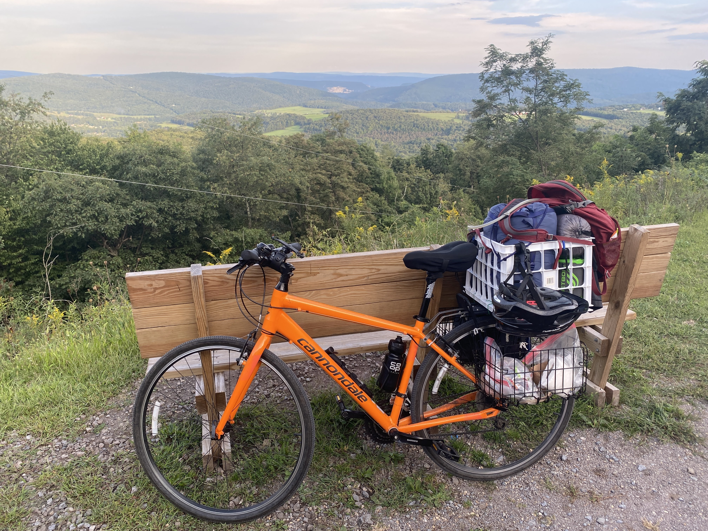
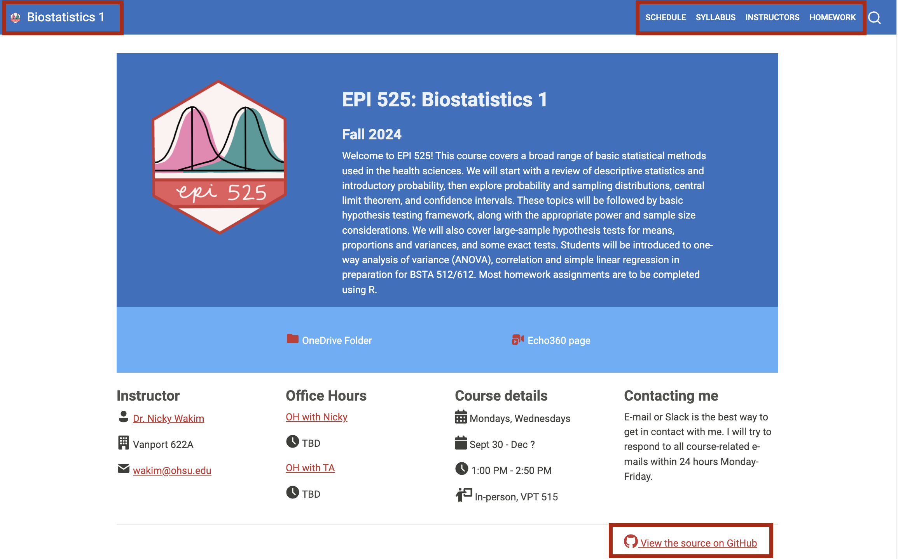
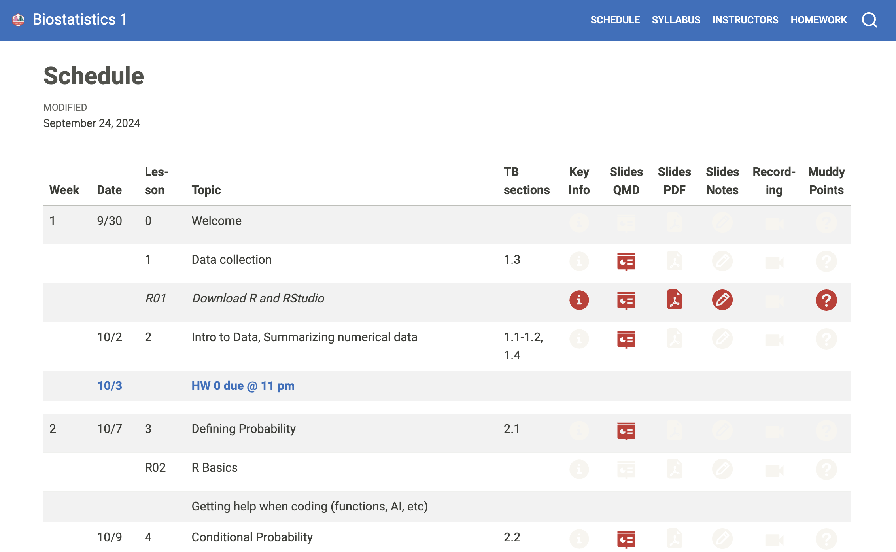
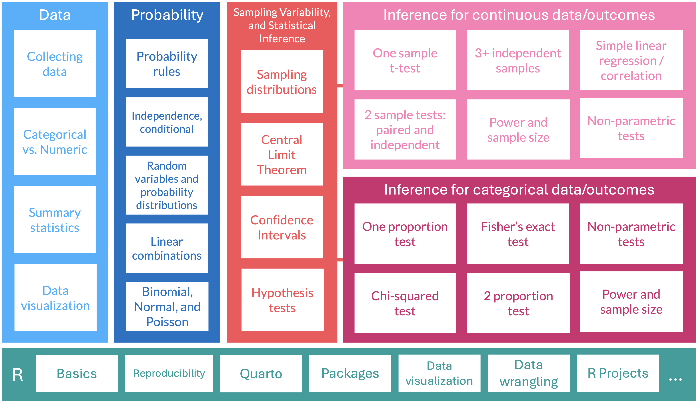

Welcome to EPI 525!
Nicky Wakim (she/her)
Call me “Nicky,” “Dr. W,” “Professor Wakim,” or any combo!
Assistant Professor of Biostatistics
Grew up in DC area (Virginia side!)
Moved here from Michigan around 2 years ago
Two sweet kitties
Volleyball, pickleball, ceramics, strolling around my neighborhood
But also sleeping, TV, and reading
Proud plant mamma
A few other things about myself that I will share non-publicly

Important Note
This is my first time teaching the course. I will work hard to answer your questions in class, but I will often need some time outside of class to make sure I give you the best answer possible! Also, many of the examples are not my own. I will work to improve examples, but if you have feedback or suggestions, I am happy to hear them!
Some important tasks
Star the class website: https://nwakim.github.io/F24_EPI_525/
Complete the WhenIsGood for office hours
Complete Homework 0 by this Thursday at 11pm!
- Includes some items above
- Think about what day of the week you would like your homeworks due
Highly suggest that you make an appointment with a learning specialist through Student Academic Success Center!
Let’s visit the website: Homepage

Let’s visit the website: Syllabus
- Course learning objectives
- Textbook in shared folder!
- R: we will start to learn this programming language
- Assessments and grade breakdowns
- Homework: 3 parts + grading
- Feedback: in the form of exit tickets, group evals, midterm feedback, and final course
- How to succeed in this course: resources and assignments explained
- Late work policy / Attendance policy
- ChatGPT and other AI technology
- Course expectations: a few ways that I will show you respect and commitment to you as students
- And a few ways I expect from you!
- Communicating with me: give me 24 hours to reply M-F
- Online communication is not my strength!
A potential decision
This class will have recordings
Questions to ask yourself when deciding to attend in person vs. online
- Can you learn the lecture content just as well online?
- Do you benefit from in-person learning? Does it align with your learning style?
- What is your experience in-person vs. online?
- Do you engage with the content differently in-person vs. online?
- Does peer interaction add value to your experience?
- Is it important to develop a relationship with your professors?
Let’s visit the website: Schedule (1/2)
- Weeks, class info, exams, homeworks

Let’s visit the website: Schedule (2/2)
Let’s visit the website: Search
Let’s visit the website: Homework!
Decision on Homework due dates
I have some set due dates in the schedule
Please look at your other classes, your calendar, etc
Consider what day of the week you would like to turn in your assignment, solutions, and video/meeting
Question in HW 0 to cast your vote and share your opinion
We have homework every week
- Homework 8 is due on 11/26 (Wednesday before Thanksgiving break)
- You will have the option of turning it in with Homework 9
Structure for this course
Learning the basic tools to understand statistics
It is going to feel useless at times, but I swear it is not!
This class will help you build a toolbox that allows to analyze data while understanding the inner theory at play
What we will cover

Let me know if you have questions
Or if there’s any contradicting information in the course site… I’m sure I made a mistake somewhere!!